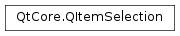

QItemSelection¶
Synopsis¶
Functions¶
- def
__add__(l) - def
__eq__(l) - def
__iadd__(l) - def
__iadd__(t) - def
__lshift__(l) - def
__lshift__(t) - def
__ne__(l) - def
append(t) - def
append(t) - def
at(i) - def
back() - def
clear() - def
constFirst() - def
constLast() - def
contains(index) - def
count() - def
count(t) - def
detachShared() - def
empty() - def
endsWith(t) - def
first() - def
front() - def
indexOf(t[, from=0]) - def
indexes() - def
insert(i, t) - def
isEmpty() - def
isSharedWith(other) - def
last() - def
lastIndexOf(t[, from=-1]) - def
length() - def
merge(other, command) - def
mid(pos[, length=-1]) - def
move(from, to) - def
operator[](i) - def
pop_back() - def
pop_front() - def
prepend(t) - def
push_back(t) - def
push_front(t) - def
removeAll(t) - def
removeAt(i) - def
removeFirst() - def
removeLast() - def
removeOne(t) - def
replace(i, t) - def
reserve(size) - def
select(topLeft, bottomRight) - def
setSharable(sharable) - def
size() - def
startsWith(t) - def
swap(i, j) - def
swap(other) - def
takeAt(i) - def
takeFirst() - def
takeLast() - def
toSet() - def
toVector() - def
value(i) - def
value(i, defaultValue)
Static functions¶
- def
fromSet(set) - def
fromVector(vector) - def
split(range, other, result)
Detailed Description¶
The
PySide2.QtCore.QItemSelectionclass manages information about selected items in a model.A
PySide2.QtCore.QItemSelectiondescribes the items in a model that have been selected by the user. APySide2.QtCore.QItemSelectionis basically a list of selection ranges, seePySide2.QtCore.QItemSelectionRange. It provides functions for creating and manipulating selections, and selecting a range of items from a model.The
PySide2.QtCore.QItemSelectionclass is one of the Model/View Classes and is part of Qt’s model/view framework .An item selection can be constructed and initialized to contain a range of items from an existing model. The following example constructs a selection that contains a range of items from the given
model, beginning at thetopLeft, and ending at thebottomRight.selection = QItemSelection(topLeft, bottomRight)An empty item selection can be constructed, and later populated as required. So, if the model is going to be unavailable when we construct the item selection, we can rewrite the above code in the following way:
selection = QItemSelection() ... selection.select(topLeft, bottomRight)
PySide2.QtCore.QItemSelectionsaves memory, and avoids unnecessary work, by working with selection ranges rather than recording the model item index for each item in the selection. Generally, an instance of this class will contain a list of non-overlapping selection ranges.Use
PySide2.QtCore.QItemSelection.merge()to merge one item selection into another without making overlapping ranges. UsePySide2.QtCore.QItemSelection.split()to split one selection range into smaller ranges based on a another selection range.
-
class
PySide2.QtCore.QItemSelection¶ -
class
PySide2.QtCore.QItemSelection(QItemSelection) -
class
PySide2.QtCore.QItemSelection(topLeft, bottomRight) Parameters: - QItemSelection –
PySide2.QtCore.QItemSelection - bottomRight –
PySide2.QtCore.QModelIndex - topLeft –
PySide2.QtCore.QModelIndex
Constructs an empty selection.
Constructs an item selection that extends from the top-left model item, specified by the
topLeftindex, to the bottom-right item, specified bybottomRight.- QItemSelection –
-
PySide2.QtCore.QItemSelection.append(t)¶ Parameters: t –
-
PySide2.QtCore.QItemSelection.append(t) Parameters: t – PySide2.QtCore.QItemSelectionRange
-
PySide2.QtCore.QItemSelection.at(i)¶ Parameters: i – PySide2.QtCore.intReturn type: PySide2.QtCore.QItemSelectionRange
-
PySide2.QtCore.QItemSelection.back()¶ Return type: PySide2.QtCore.QItemSelectionRange
-
PySide2.QtCore.QItemSelection.clear()¶
-
PySide2.QtCore.QItemSelection.constFirst()¶ Return type: PySide2.QtCore.QItemSelectionRange
-
PySide2.QtCore.QItemSelection.constLast()¶ Return type: PySide2.QtCore.QItemSelectionRange
-
PySide2.QtCore.QItemSelection.contains(index)¶ Parameters: index – PySide2.QtCore.QModelIndexReturn type: PySide2.QtCore.boolReturns
trueif the selection contains the givenindex; otherwise returnsfalse.
-
PySide2.QtCore.QItemSelection.count()¶ Return type: PySide2.QtCore.int
-
PySide2.QtCore.QItemSelection.count(t) Parameters: t – PySide2.QtCore.QItemSelectionRangeReturn type: PySide2.QtCore.int
-
PySide2.QtCore.QItemSelection.empty()¶ Return type: PySide2.QtCore.bool
-
PySide2.QtCore.QItemSelection.endsWith(t)¶ Parameters: t – PySide2.QtCore.QItemSelectionRangeReturn type: PySide2.QtCore.bool
-
PySide2.QtCore.QItemSelection.first()¶ Return type: PySide2.QtCore.QItemSelectionRange
-
static
PySide2.QtCore.QItemSelection.fromSet(set)¶ Parameters: set – Return type:
-
static
PySide2.QtCore.QItemSelection.fromVector(vector)¶ Parameters: vector – Return type:
-
PySide2.QtCore.QItemSelection.front()¶ Return type: PySide2.QtCore.QItemSelectionRange
-
PySide2.QtCore.QItemSelection.indexOf(t[, from=0])¶ Parameters: - t –
PySide2.QtCore.QItemSelectionRange - from –
PySide2.QtCore.int
Return type: PySide2.QtCore.int- t –
-
PySide2.QtCore.QItemSelection.indexes()¶ Return type: PySide2.QtCore.QModelIndexListReturns a list of model indexes that correspond to the selected items.
-
PySide2.QtCore.QItemSelection.insert(i, t)¶ Parameters: - i –
PySide2.QtCore.int - t –
PySide2.QtCore.QItemSelectionRange
- i –
-
PySide2.QtCore.QItemSelection.isEmpty()¶ Return type: PySide2.QtCore.bool
Parameters: other – Return type: PySide2.QtCore.bool
-
PySide2.QtCore.QItemSelection.last()¶ Return type: PySide2.QtCore.QItemSelectionRange
-
PySide2.QtCore.QItemSelection.lastIndexOf(t[, from=-1])¶ Parameters: - t –
PySide2.QtCore.QItemSelectionRange - from –
PySide2.QtCore.int
Return type: PySide2.QtCore.int- t –
-
PySide2.QtCore.QItemSelection.length()¶ Return type: PySide2.QtCore.int
-
PySide2.QtCore.QItemSelection.merge(other, command)¶ Parameters: - other –
PySide2.QtCore.QItemSelection - command –
PySide2.QtCore.QItemSelectionModel.SelectionFlags
Merges the
otherselection with thisPySide2.QtCore.QItemSelectionusing thecommandgiven. This method guarantees that no ranges are overlapping.Note that only
QItemSelectionModel.Select,QItemSelectionModel.Deselect, andQItemSelectionModel.Toggleare supported.- other –
-
PySide2.QtCore.QItemSelection.mid(pos[, length=-1])¶ Parameters: - pos –
PySide2.QtCore.int - length –
PySide2.QtCore.int
Return type: - pos –
-
PySide2.QtCore.QItemSelection.move(from, to)¶ Parameters: - from –
PySide2.QtCore.int - to –
PySide2.QtCore.int
- from –
-
PySide2.QtCore.QItemSelection.__ne__(l)¶ Parameters: l – Return type: PySide2.QtCore.bool
-
PySide2.QtCore.QItemSelection.__add__(l)¶ Parameters: l – Return type:
-
PySide2.QtCore.QItemSelection.__iadd__(t)¶ Parameters: t – PySide2.QtCore.QItemSelectionRangeReturn type:
-
PySide2.QtCore.QItemSelection.__iadd__(l) Parameters: l – Return type:
-
PySide2.QtCore.QItemSelection.__lshift__(l)¶ Parameters: l – Return type:
-
PySide2.QtCore.QItemSelection.__lshift__(t) Parameters: t – PySide2.QtCore.QItemSelectionRangeReturn type:
-
PySide2.QtCore.QItemSelection.__eq__(l)¶ Parameters: l – Return type: PySide2.QtCore.bool
-
PySide2.QtCore.QItemSelection.operator[](i) Parameters: i – PySide2.QtCore.intReturn type: PySide2.QtCore.QItemSelectionRange
-
PySide2.QtCore.QItemSelection.pop_back()¶
-
PySide2.QtCore.QItemSelection.pop_front()¶
-
PySide2.QtCore.QItemSelection.prepend(t)¶ Parameters: t – PySide2.QtCore.QItemSelectionRange
-
PySide2.QtCore.QItemSelection.push_back(t)¶ Parameters: t – PySide2.QtCore.QItemSelectionRange
-
PySide2.QtCore.QItemSelection.push_front(t)¶ Parameters: t – PySide2.QtCore.QItemSelectionRange
-
PySide2.QtCore.QItemSelection.removeAll(t)¶ Parameters: t – PySide2.QtCore.QItemSelectionRangeReturn type: PySide2.QtCore.int
-
PySide2.QtCore.QItemSelection.removeAt(i)¶ Parameters: i – PySide2.QtCore.int
-
PySide2.QtCore.QItemSelection.removeFirst()¶
-
PySide2.QtCore.QItemSelection.removeLast()¶
-
PySide2.QtCore.QItemSelection.removeOne(t)¶ Parameters: t – PySide2.QtCore.QItemSelectionRangeReturn type: PySide2.QtCore.bool
-
PySide2.QtCore.QItemSelection.replace(i, t)¶ Parameters: - i –
PySide2.QtCore.int - t –
PySide2.QtCore.QItemSelectionRange
- i –
-
PySide2.QtCore.QItemSelection.reserve(size)¶ Parameters: size – PySide2.QtCore.int
-
PySide2.QtCore.QItemSelection.select(topLeft, bottomRight)¶ Parameters: - topLeft –
PySide2.QtCore.QModelIndex - bottomRight –
PySide2.QtCore.QModelIndex
Adds the items in the range that extends from the top-left model item, specified by the
topLeftindex, to the bottom-right item, specified bybottomRightto the list.Note
topLeftandbottomRightmust have the same parent.- topLeft –
-
PySide2.QtCore.QItemSelection.setSharable(sharable)¶ Parameters: sharable – PySide2.QtCore.bool
-
PySide2.QtCore.QItemSelection.size()¶ Return type: PySide2.QtCore.int
-
static
PySide2.QtCore.QItemSelection.split(range, other, result)¶ Parameters: - range –
PySide2.QtCore.QItemSelectionRange - other –
PySide2.QtCore.QItemSelectionRange - result –
PySide2.QtCore.QItemSelection
Splits the selection
rangeusing the selectionotherrange. Removes all items inotherfromrangeand puts the result inresult. This can be compared with the semantics of the subtract operation of a set.- range –
-
PySide2.QtCore.QItemSelection.startsWith(t)¶ Parameters: t – PySide2.QtCore.QItemSelectionRangeReturn type: PySide2.QtCore.bool
-
PySide2.QtCore.QItemSelection.swap(i, j)¶ Parameters: - i –
PySide2.QtCore.int - j –
PySide2.QtCore.int
- i –
-
PySide2.QtCore.QItemSelection.swap(other) Parameters: other –
-
PySide2.QtCore.QItemSelection.takeAt(i)¶ Parameters: i – PySide2.QtCore.intReturn type: PySide2.QtCore.QItemSelectionRange
-
PySide2.QtCore.QItemSelection.takeFirst()¶ Return type: PySide2.QtCore.QItemSelectionRange
-
PySide2.QtCore.QItemSelection.takeLast()¶ Return type: PySide2.QtCore.QItemSelectionRange
-
PySide2.QtCore.QItemSelection.toSet()¶ Return type:
-
PySide2.QtCore.QItemSelection.toVector()¶ Return type:
-
PySide2.QtCore.QItemSelection.value(i)¶ Parameters: i – PySide2.QtCore.intReturn type: PySide2.QtCore.QItemSelectionRange
-
PySide2.QtCore.QItemSelection.value(i, defaultValue) Parameters: - i –
PySide2.QtCore.int - defaultValue –
PySide2.QtCore.QItemSelectionRange
Return type: - i –
© 2018 The Qt Company Ltd. Documentation contributions included herein are the copyrights of their respective owners. The documentation provided herein is licensed under the terms of the GNU Free Documentation License version 1.3 as published by the Free Software Foundation. Qt and respective logos are trademarks of The Qt Company Ltd. in Finland and/or other countries worldwide. All other trademarks are property of their respective owners.